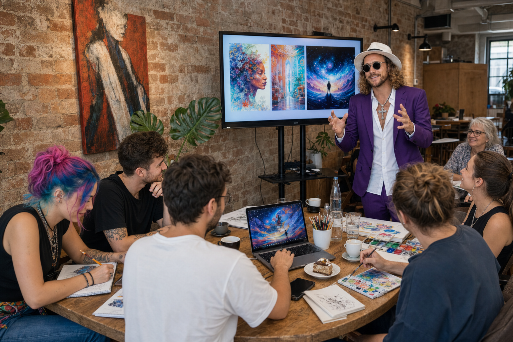
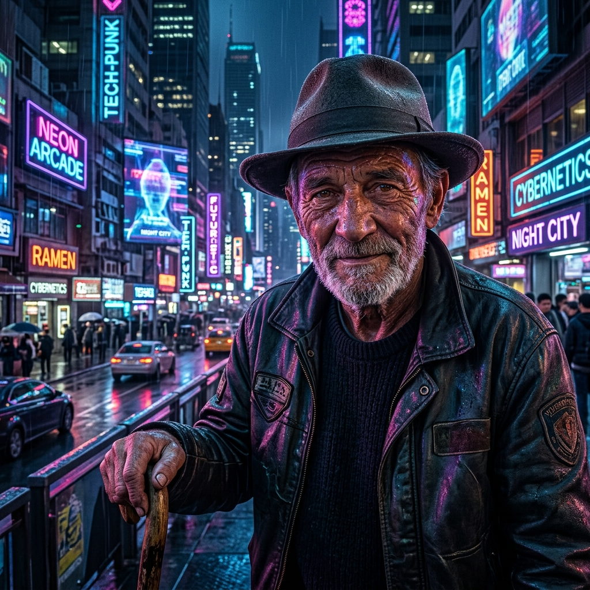
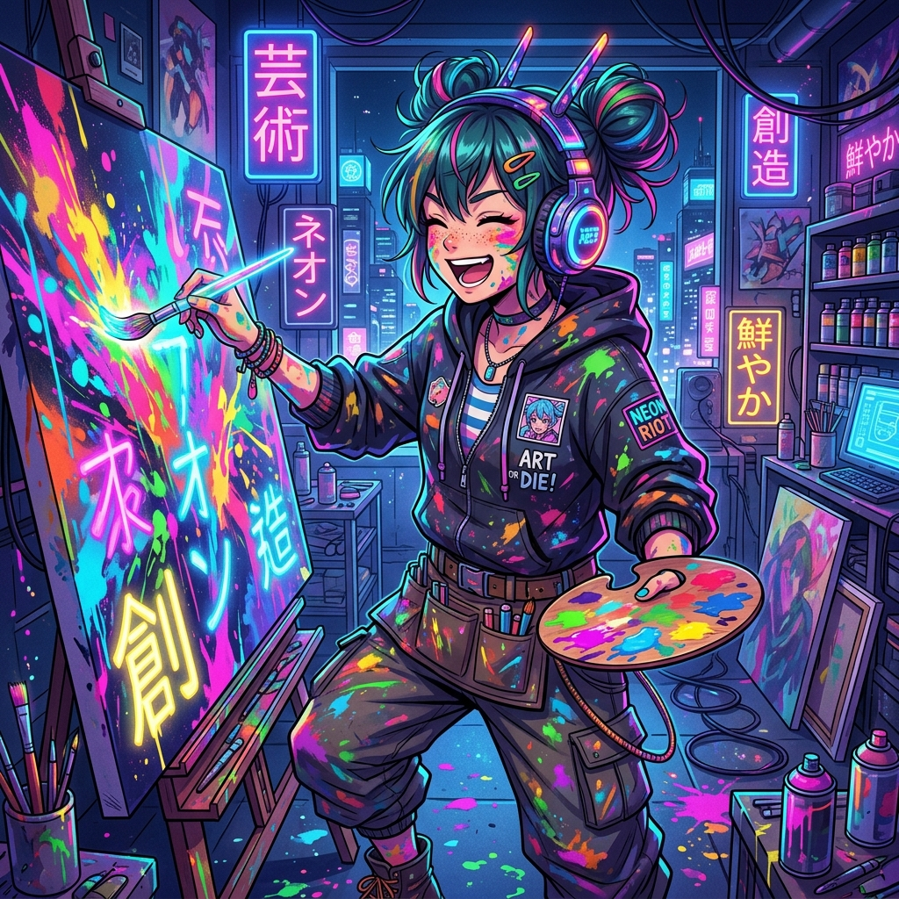
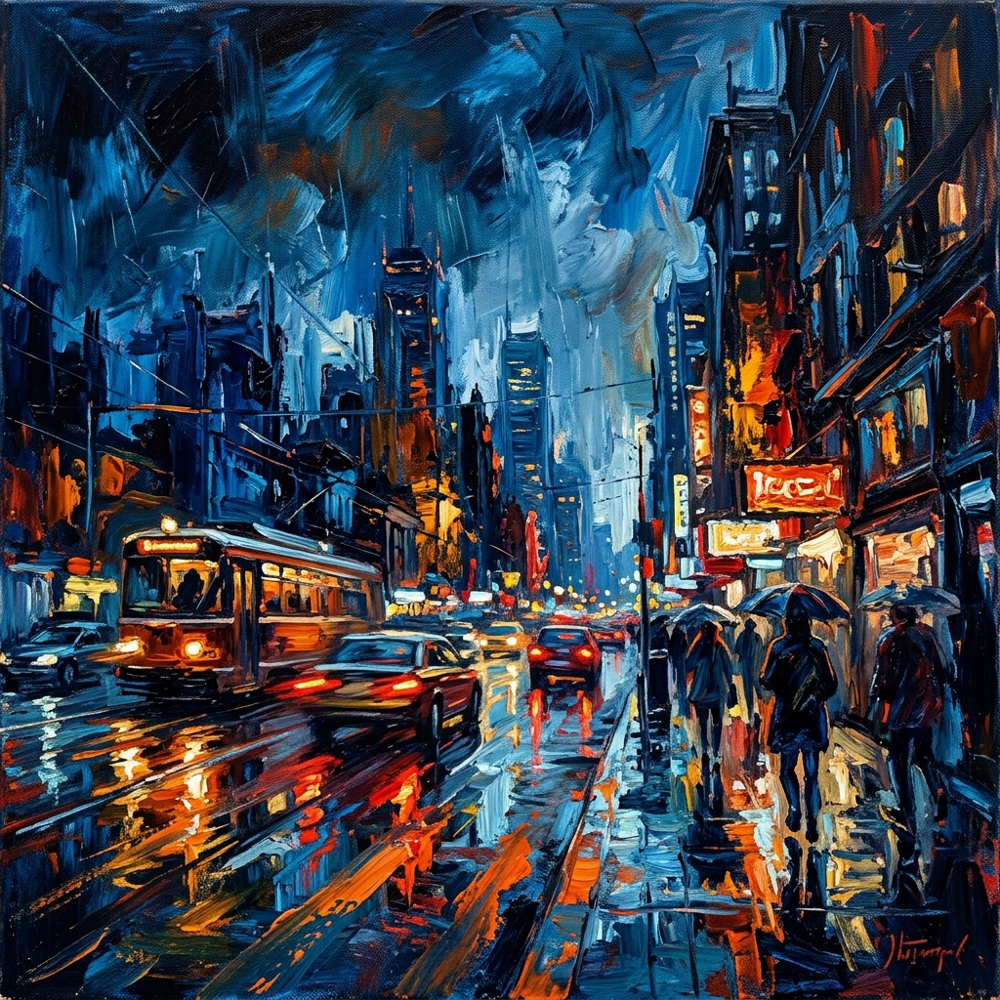
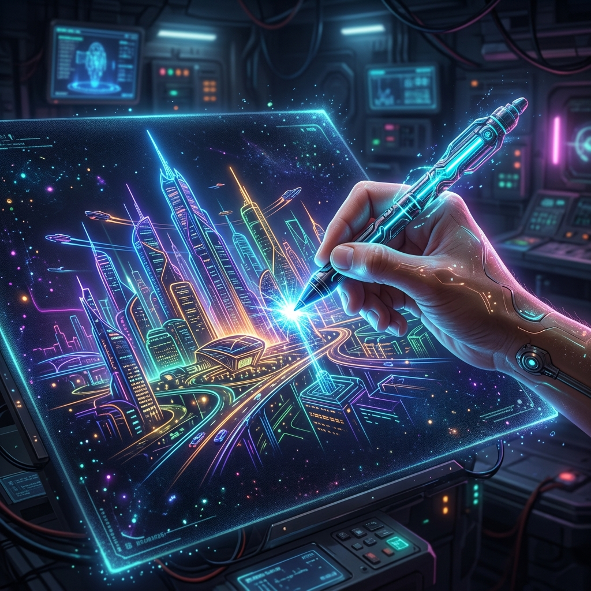

Künstler Phil Splash führt live durch Prompting & KI-Bildgenerierung – danach entwickelst du deine eigenen Ideen weiter.
🎯 Was dich erwartet
Bei „AI X Art“ treffen analoge Kreativität und künstliche Intelligenz aufeinander. Die Teilnehmer gestalten zunächst kleine Zeichnungen, Skizzen oder abstrakte Kunstwerke auf Papier und entwickeln diese anschließend mithilfe von KI kreativ weiter. So entstehen neue Bildwelten, Stilrichtungen und überraschende kreative Möglichkeiten zwischen Mensch und Maschine. Begleitet wird das Format vom Künstler Phil Splash, auch bekannt als „Der Millionenmaler“, der eine kurze Einführung in kreative KI-Workflows gibt. Danach stehen freies kreatives Arbeiten, Experimentieren und gemeinsamer Austausch im Mittelpunkt.
- ✔ Neue kreative Denkweisen kennenlernen
- ✔ Eigene analoge Ideen digital weiterentwickeln
- ✔ Erste Erfahrungen mit Prompting & Bildgenerierung
- ✔ Inspiration für eigene Projekte mitnehmen
🎒 Was du brauchst
- 📱 Smartphone, Tablet oder Laptop
- 🤖 ChatGPT-App & aktiver Account (bitte vorab anmelden!)
- 📝 Zeichenblock oder Papier
- 🖍️ 2-3 Stifte / Marker nach Wahl
- Optional: vorhandene Skizzen oder eigene Kunstwerke
🛠️ Verwendete Tools
Empfohlen: ChatGPT inklusive Bildgenerierung. Alternativ andere AI-Bildtools. Die kostenlose Version reicht für einfache Experimente meist aus.
Workshop-Ablauf
Keine trockene Theorie, sondern direktes Ausprobieren & Experimentieren.
Modul 1: Begrüßung & Vorstellungsrunde
15 MinKurze Einführung:
- Wer ist Phil Splash?
- Was erwartet die Teilnehmer?
- Warum KI & Kreativität?
Anschließend kurze Vorstellungsrunde:
- Name
- kreativer Hintergrund
- erste Erfahrungen mit KI
- Erwartungen an den Workshop
Modul 2: KI als kreativer Sparringspartner
20 MinKurze Live-Demo:
Wie kann ChatGPT kreative Prozesse unterstützen?
Beispiele:
- Brainstorming
- Stilfindung
- Bildideen entwickeln
- kreative Blockaden lösen
- Storytelling
- Moodboards
- Bildbeschreibungen erzeugen
Beispiel-Prompt für Brainstorming:
Ziel:
Die Teilnehmer verstehen, dass KI nicht nur fertige Bilder erzeugt, sondern kreative Denkprozesse unterstützen kann.
Modul 3: Erste KI-Experimente
20 MinDie Teilnehmer experimentieren frei mit:
- Textprompts
- Bildideen
- Stilrichtungen
- kreativen Kombinationen
Fotorealistischer Stil:

Anime / Manga Stil:

Expressionistischer Stil:

Ziel:
Hemmschwellen abbauen und erste Ergebnisse erzeugen.
Modul 4: Human in the Loop (Highlight)
35 MinJetzt entsteht eigener kreativer Input. Die Teilnehmer:
- zeichnen Skizzen
- kritzeln Formen
- malen abstrakte Elemente
- erstellen Portraits oder Ideen
Danach: Die analogen Arbeiten werden fotografiert und mithilfe der KI weiterentwickelt.
Beispiel-Prompt:
Erweiterungen:
- „… als futuristisches Kinoplakat“
- „… als fotorealistisches Gemälde“
- „… als Sci-Fi Concept Art“
- „… im Stil eines expressionistischen Künstlers“
- „… als Cyberpunk-Artwork“

Ziel:
Die Teilnehmer erleben direkt die Zusammenarbeit zwischen Mensch und KI.
Modul 5: Freies Experimentieren
20 MinOffene kreative Phase. Die Teilnehmer können:
- eigene Ideen weiterentwickeln
- verschiedene Prompts testen
- Stile kombinieren
- analoge und digitale Elemente verbinden
Phil Splash unterstützt individuell bei:
- Prompting
- kreativen Ideen
- Bildgestaltung
- Stilentwicklung
Kreativ-Prompt:
Modul 6: Präsentation & Abschluss
10 MinKurze Präsentation der Ergebnisse:
- Was wurde erstellt?
- Was hat überrascht?
- Was hat funktioniert?
- Welche Möglichkeiten sehen die Teilnehmer?
Optional: Präsentation über Screen oder Beamer.
Abschlussrunde:
- wichtigste Erkenntnisse
- offene Fragen
- zukünftige Nutzungsmöglichkeiten von KI im kreativen Bereich
Empfohlene Tools
- ChatGPT →
Brainstorming, Prompts & Bildgenerierung - Midjourney →
Atmosphärische, cineastische Bildwelten - Krea AI →
Echtzeit-Generierung & Style Transfer - Leonardo AI →
Fotorealismus & Concept Art - Runway →
AI-Video & Animation
Inspiration & Links
- The Cr[AI]tive Revolution Documentary
- Refik Anadol Studio
- Unsupervised - MoMA
- AI art & the future of creativity
"KI ersetzt Kreativität nicht. Die spannendsten Ergebnisse entstehen dann, wenn menschliche Ideen mit KI kombiniert werden."